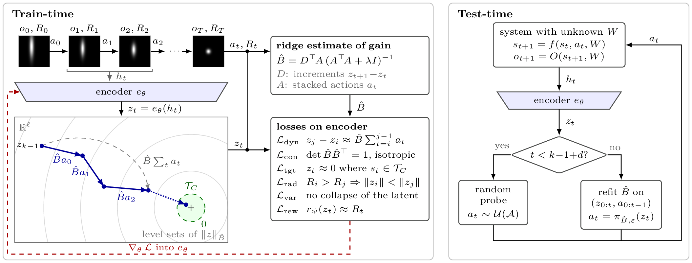
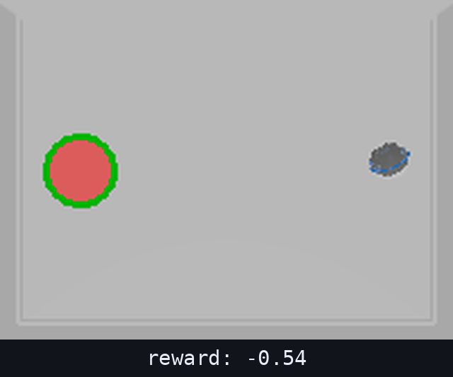
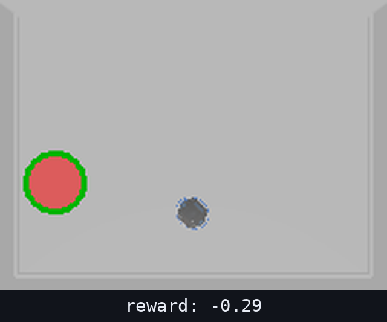
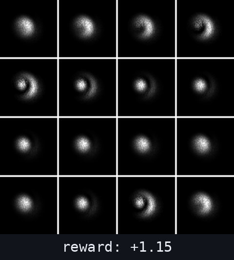
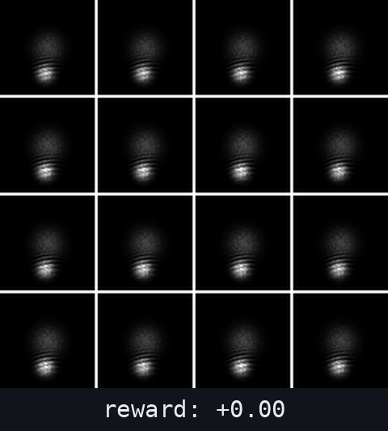
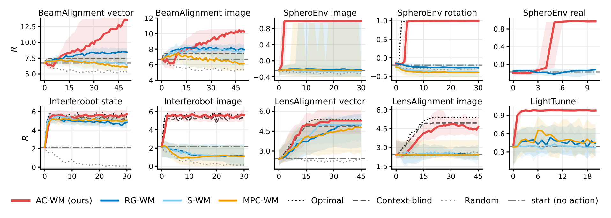
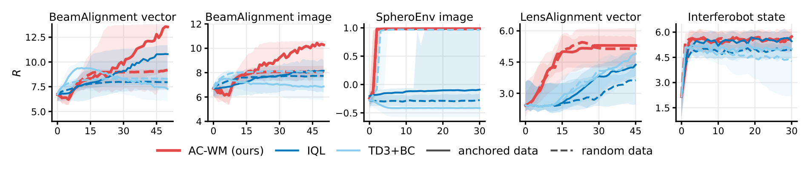
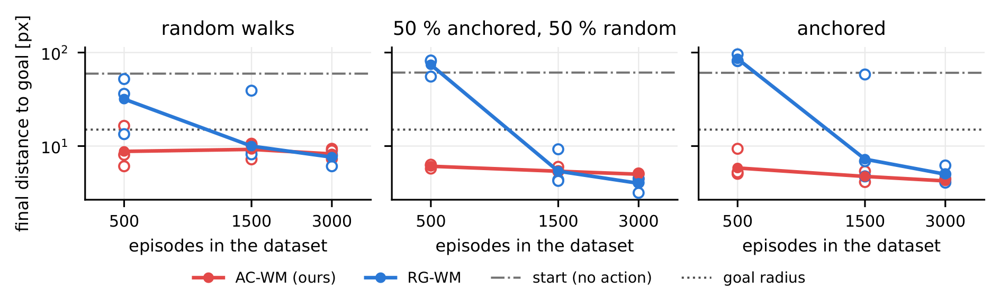
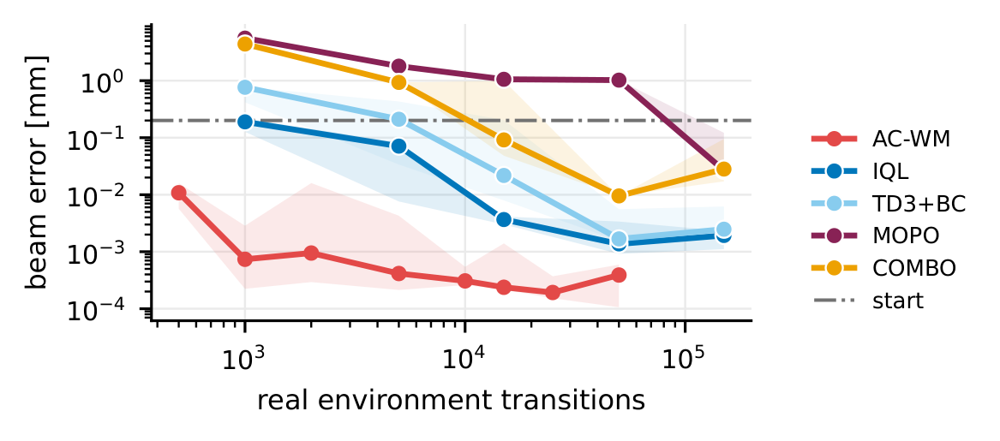
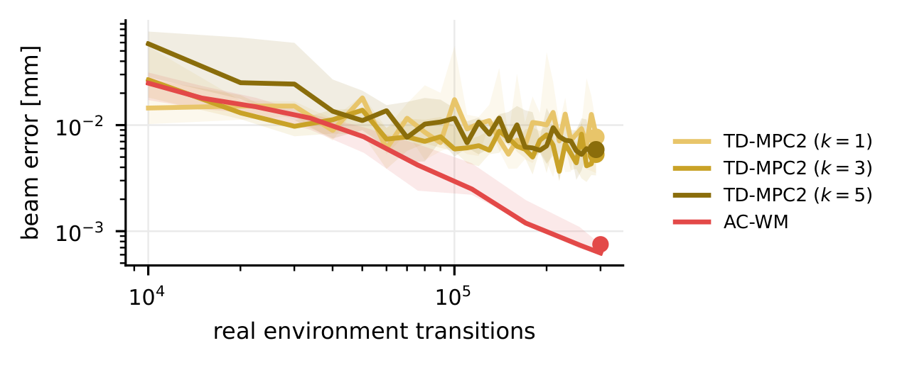

LensAlignment
Active alignment of a lens system, a Cooke triplet whose individual lenses are decentered and tilted anew every episode.
A latent space where actions act linearly and every task's target sits at the origin, turning planning into a single closed-form step.
World models are trained to predict, then used to plan. Where a task demands precision, the two objectives come apart: a model that fits its observations well can still leave the planner without a route to the target. We study tasks in which objects must be placed precisely to maximize a reward signal, even though their positions are never observed directly, and where an unknown, per-episode context both displaces the target and distorts every action.
We introduce action-coordinates: latent representations in which actions act linearly and the target sits at the origin. On top of them we build a world-model architecture that moves structure out of the planner and into the representation itself. We study the mathematical conditions under which action-coordinates exist, what structure they impose, and when they can be learned from high-dimensional observations, and we derive a closed-form policy together with the conditions under which it is optimal. We validate the theory on challenging, high-fidelity, visually observed benchmarks, where action-coordinate world models (AC-WM) outperform both planner-based and gradient-based world models.

Model-based reinforcement learning fits a world model to logged transitions, then searches it for the action to apply, by imagining rollouts, by gradient ascent on a predicted return, or by sampling candidate actions. This division of labor leaves the search with the harder half: planning over a learned model is considerably harder than the model's own accuracy would suggest. On tasks where the reward is highly sensitive to small misalignments and the context that causes them is never directly observed, this gap becomes the failure mode. A residual the model treats as small can be a large misalignment, and identifying the hidden context across frames falls entirely to the planner.
We take a more direct route: instead of learning a latent space and leaving a planner to search it, we learn action-coordinate systems, latent coordinates in which actions act linearly and the target always sits at the origin. Solving the task then means steering the latent state to zero, which has a closed-form, one-step solution and needs no search at all. What remains outside the model is identification: the encoder has to absorb whatever distortion the hidden context causes into coordinates that stay linear in the action.
We formalize when action-coordinate systems exist, when a closed-form policy is time-optimal, and when an encoder can realize such coordinates from raw image observations. The resulting architecture, AC-WM, is trained on offline, reward-anchored trajectories and replaces search-based planning with a single pseudo-inverse step toward the origin. The approach assumes reachable, target-set tasks under reversible dynamics; the paper discusses these assumptions and their limitations in more detail.


AC-WM steers straight to the goal; the planner-based model never converges.


AC-WM converges within a few steps; the planner-based model stalls short of the optimum.
We evaluate on five positioning tasks that share one structure: an image (and, on some tasks, a low-dimensional vector) as the observation, a reward that is maximal at a target displaced by a hidden per-episode context, and an actuation the same context rescales. The context differs across tasks, such as a manufacturing defect, an incoming beam, an actuator calibration, the color of the illumination, or an unknown action frame, and so does the target: a single point for most tasks, or a line for BeamAlignment, where several magnets jointly steer multiple beam parameters. LightTunnel runs on physical hardware and SpheroEnv has a real hardware twin; the rest are high-fidelity simulators.
Active alignment of a lens system, a Cooke triplet whose individual lenses are decentered and tilted anew every episode.
Steering a charged-particle beam onto a diagnostic screen at a real particle-accelerator test facility, using multiple magnets to jointly control several beam parameters.
Overlapping the two beams of an optical interferometer so that their visibility is maximized.
Tuning the focus, gain, and two polarizers of a camera looking into a physical light-tunnel testbed.
Driving a rolling-ball robot to a goal in a planar arena, evaluated in simulation and on a real hardware twin.
AC-WM outperforms every other world-model scheme by a wide margin, and on most environments it comes close to step-optimal once its short probing phase is done. The exception is BeamAlignment, which needs more steps because the closed-form policy is not guaranteed to be time-optimal there. The gap is not caused by the encoder: on SpheroEnv, both AC-WM and the vanilla world models read the same keypoint-encoded image, yet AC-WM is already inside the goal radius on the smallest training set, while the vanilla planners need far more data before planning works at all.


AC-WM is far more sample-efficient than both vanilla world models and online model-based RL: on SpheroEnv, AC-WM's planner is already effective on the smallest training set, well before the vanilla world model's planner starts working at all. On BeamAlignment, AC-WM reaches a lower beam error from far fewer offline transitions than an online, well-tuned model-based baseline needs, even given substantially more environment interactions.


